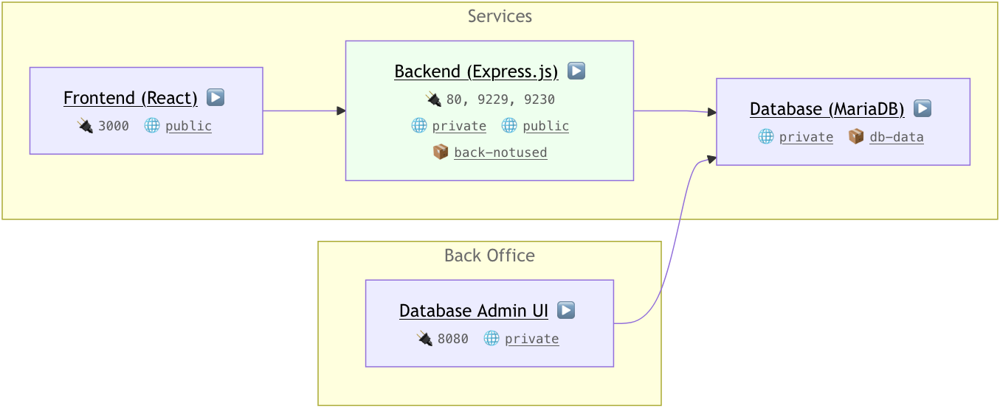

❗️ Failed to update status
Cannot connect to the status update endpoint. Is the Laebel service running?
Reload
Overview

Services
Backend (Express.js)
The backend server running Express.js on Node.js, serving the frontend with messages.
- Name:
backend 📋
- Image:
react-express-mysql-backend 📋
- Status:
▶️ 1 running (1 healthy)
- Links: API Endpoint
-
Ports:
80: Public HTTP9229: Node.js Debugging9230: Node.js Profiling
-
Networks:
-
Volumes:
Expand for details on 1 container.
| Container ID |
Name |
Created |
Status |
Health |
Port Bindings |
09aba6be3d46 📋 |
react-express-mysql-backend-1 📋 |
2024-10-21 18:06:42 |
running |
healthy |
80, 9229, 9230 |
Database (MariaDB)
The primary database, serving the backend with data. Running MySQL-compatible MariaDB.
- Name:
db 📋
- Image:
mariadb:10.6.4-focal 📋
- Status: ▶️ 1 running
-
Networks:
-
Volumes:
Expand for details on 1 container.
| Container ID |
Name |
Created |
Status |
Health |
Port Bindings |
a7b32253377c 📋 |
react-express-mysql-db-1 📋 |
2024-10-22 14:39:06 |
running |
unknown |
none |
Frontend (React)
A Nginx server hosts the React-based frontend which displays important messages.
- Name:
frontend 📋
- Image:
react-express-mysql-frontend 📋
- Status: ▶️ 1 running
- Links: Webpage
-
Ports:
-
Networks:
Expand for details on 1 container.
| Container ID |
Name |
Created |
Status |
Health |
Port Bindings |
ce9098d67bdc 📋 |
react-express-mysql-frontend-1 📋 |
2024-10-21 18:06:42 |
running |
unknown |
3000 |
Back Office
Database Admin UI
phpMyAdmin is a web-based database management tool for MariaDB.
Expand for details on 1 container.
| Container ID |
Name |
Created |
Status |
Health |
Port Bindings |
de94f4f9c97d 📋 |
react-express-mysql-phpMyAdmin-1 📋 |
2024-10-21 21:16:14 |
running |
unknown |
8080->80 |
Networks
Public Network
Public network for services that need to be exposed to the internet.
- Name:
public 📋
- Driver:
bridge
-
Services:
Private Network
Private network for services that should not be exposed to the internet.
- Name:
private 📋
- Driver:
bridge
-
Services:
Volumes
Database Storage
Persistent storage volume for the database.
- Name:
db-data 📋
- Driver:
local
-
Services:
Backend Storage (Currently Not Used)
Volume intended for storing backend data.
- Name:
back-notused 📋
- Driver:
local
-
Services: